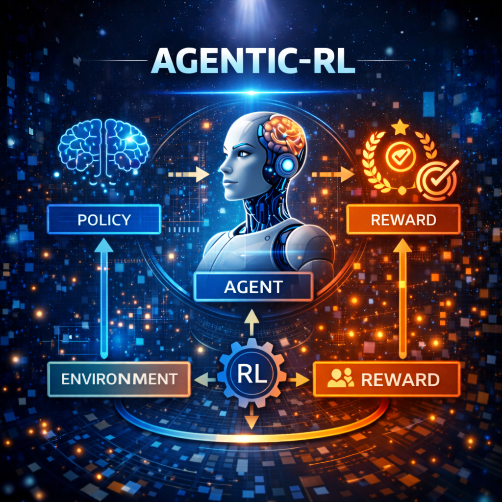

10 Agentic-RL

10.1 基于强化学习的智能体训练
在前面的章节中，我们实现了多种智能体范式和通信协议。不过智能体处理更复杂的任务时表现不佳，自然会有疑问:如何让智能体具备更强的推理能力?如何让智能体学会更好地使用工具?如何让智能体能够自我改进?
这正是 Agentic-RL(基于强化学习的智能体训练)要解决的核心问题。本章将为 HelloAgents 框架引入强化学习训练能力，让你能够训练出具备推理、工具使用等高级能力的智能体。我们将从 LLM 训练的基础知识开始，逐步深入到监督微调(Supervised Fine-Tuning，SFT)、群组相对策略优化(Group Relative Policy Optimization， GRPO)等实用技术，最终构建一个完整的智能体训练 pipeline。
10.2 强化学习基础
10.2.1 什么是强化学习
强化学习(Reinforcement Learning，RL)是一种机器学习范式，智能体通过与环境交互来学习最优策略。在强化学习中：
- 智能体(Agent)：学习并做出决策的主体
- 环境(Environment)：智能体与之交互的外部世界
- 状态(State)：环境的当前情况
- 动作(Action)：智能体可以采取的行为
- 奖励(Reward)：环境对智能体行为的反馈信号
智能体的目标是通过最大化累积奖励来学习最优策略。
10.2.2 Agentic-RL 的独特性
传统的强化学习主要针对游戏、机器人控制等场景，而 Agentic-RL 专注于训练大语言模型(LLM)智能体，具有以下特点：
- 动作空间巨大：LLM 的输出是连续的文本，动作空间是无限的
- 推理能力：智能体需要理解复杂的指令并进行推理
- 工具使用：智能体需要学会调用外部工具来完成任务
- 多轮对话：智能体需要与用户进行多轮交互
10.3 HelloAgents 的强化学习架构
HelloAgents 框架提供了一个完整的强化学习训练系统，包含以下核心组件：
10.3.1 环境(Environment)
环境定义了智能体与之交互的世界。HelloAgents 提供了 GymStyleEnvironment 基类，采用类似 OpenAI Gym 的接口设计。
from HelloAgents.rl import GymStyleEnvironment, Observation, Action
class SimpleEnvironment(GymStyleEnvironment):
"""简单环境示例：智能体需要从 0 走到 10"""
def __init__(self, max_steps: int = 10):
super().__init__("SimpleEnvironment", max_steps)
self.target = 10
self._current_position = 0
def _get_initial_observation(self) -> Observation:
"""获取初始观察"""
self._current_position = 0
return Observation(data={"position": 0, "target": 10})
def _execute_action(self, action: Action) -> tuple:
"""执行动作"""
step = action.data # 动作是步数（1 或 2）
self._current_position += step
# 计算奖励
if self._current_position == self.target:
reward, done = 1.0, True
elif self._current_position > self.target:
reward, done = -0.5, True
else:
reward, done = 0.0, False
observation = Observation(data={"position": self._current_position, "target": 10})
return observation, reward, done, {}10.3.2 奖励函数(Reward Function)
奖励函数定义了如何评估智能体的行为。HelloAgents 提供了多种奖励函数：
10.3.2.1 稀疏奖励函数
只在任务完成时给出奖励：
from HelloAgents.rl import SparseRewardFunction
sparse_reward = SparseRewardFunction(
success_reward=1.0,
failure_reward=-1.0
)10.3.2.2 密集奖励函数
每一步都给出奖励，鼓励智能体更快完成任务：
from HelloAgents.rl import DenseRewardFunction
dense_reward = DenseRewardFunction(
step_penalty=-0.01, # 每步惩罚
success_reward=1.0 # 成功奖励
)10.3.2.3 自定义奖励函数
使用用户提供的函数来计算奖励：
from HelloAgents.rl import CustomRewardFunction
def custom_reward_fn(observation, action, next_observation):
"""根据位置接近程度给予奖励"""
position = next_observation.get("position", 0)
target = next_observation.get("target", 10)
distance = abs(target - position)
if distance == 0:
return 1.0 # 到达目标
elif distance <= 2:
return 0.5 # 接近目标
else:
return 0.0 # 还未接近
custom_reward = CustomRewardFunction(reward_fn=custom_reward_fn)10.3.3 策略(Policy)
策略定义了智能体如何选择动作。HelloAgents 提供了多种策略：
10.3.3.1 随机策略
从动作空间中随机选择动作：
from HelloAgents.rl import RandomPolicy
random_policy = RandomPolicy(
action_space=[1, 2],
name="RandomPolicy"
)10.3.3.2 贪婪策略
选择当前状态下最优的动作：
from HelloAgents.rl import GreedyPolicy
q_values = {
(0, 1): 0.1,
(0, 2): 0.2,
(1, 1): 0.3,
(1, 2): 0.4,
}
greedy_policy = GreedyPolicy(q_values=q_values)10.3.3.3 LLM 策略
使用大语言模型作为策略：
from HelloAgents.rl import LLMPolicy
llm_policy = LLMPolicy(
llm=your_llm_instance,
name="LLMPolicy"
)10.3.4 训练器(Trainer)
训练器负责执行训练过程。HelloAgents 提供了 GRPO 训练器：
from HelloAgents.rl import TrainingConfig, GRPOTrainer
config = TrainingConfig(
num_episodes=100, # 训练回合数
max_steps_per_episode=50, # 每回合最大步数
learning_rate=0.001, # 学习率
gamma=0.99, # 折扣因子
eval_freq=10 # 评估频率
)
trainer = GRPOTrainer(config=config)10.4 GRPO：群组相对策略优化
GRPO(Group Relative Policy Optimization)是一种适合训练 LLM 智能体的强化学习算法。它的核心思想是：
- 分组采样：从当前策略采样多条轨迹，形成一个组
- 计算基线：计算组内轨迹的平均奖励作为基线
- 计算优势：每条轨迹的奖励相对于基线的差异
- 策略更新：根据优势函数更新策略
10.4.1 GRPO 的优势
相比传统的 PPO 算法，GRPO 具有以下优势：
- 更高效：通过分组采样，减少了计算量
- 更稳定：使用相对优势，降低了方差
- 更适合 LLM：考虑了 LLM 的生成特性
10.4.2 使用 GRPO 训练智能体
from HelloAgents.rl import (
GymStyleEnvironment, Observation, Action,
DenseRewardFunction, RandomPolicy,
TrainingConfig, GRPOTrainer
)
# 创建环境
env = SimpleEnvironment(max_steps=10)
# 创建策略
policy = RandomPolicy(action_space=[1, 2])
# 创建奖励函数
reward_fn = DenseRewardFunction(step_penalty=-0.01, success_reward=1.0)
# 创建训练器
config = TrainingConfig(num_episodes=20, max_steps_per_episode=10, eval_freq=5)
trainer = GRPOTrainer(config=config)
# 训练
result = trainer.train(
environment=env,
policy=policy,
reward_fn=reward_fn
)
print(f"训练结果: {result}")
# 评估
eval_result = trainer.evaluate(
environment=env,
policy=policy,
reward_fn=reward_fn,
num_episodes=5
)
print(f"评估结果: {eval_result}")10.5 完整的训练 Pipeline
HelloAgents 提供了 AgenticRLPipeline 类，用于管理完整的训练流程：
from HelloAgents.rl import AgenticRLPipeline
# 创建 Pipeline
pipeline = AgenticRLPipeline(config_path="config.json")
# 运行 Pipeline
result = pipeline.run()
# 查看结果
print(f"训练结果: {result['training_result']}")
print(f"评估结果: {result['evaluation_result']}")
# 查看日志
for log in pipeline.get_logs():
print(log)10.5.1 配置文件
Pipeline 使用 JSON 配置文件来设置训练参数：
{
"environment": {
"name": "SimpleEnvironment",
"max_steps": 100
},
"policy": {
"name": "RandomPolicy",
"action_space": [1, 2]
},
"reward_function": {
"name": "DenseRewardFunction",
"step_penalty": -0.01,
"success_reward": 1.0
},
"trainer": {
"name": "GRPOTrainer",
"num_episodes": 100,
"max_steps_per_episode": 50,
"eval_freq": 10
},
"output_dir": "outputs",
"log_file": "training.log"
}10.5.2 Pipeline 流程
Pipeline 执行以下步骤：
- 数据准备：创建输出目录
- 组件初始化：初始化环境、策略、奖励函数和训练器
- 训练：执行训练过程
- 评估：评估训练后的策略
- 保存结果：保存训练结果和日志
10.6 实战：训练一个任务完成智能体
让我们通过一个完整的例子来展示如何使用 Agentic-RL 训练智能体。
10.6.1 定义环境
class TaskEnvironment(GymStyleEnvironment):
"""任务完成环境"""
def __init__(self, max_steps: int = 20):
super().__init__("TaskEnvironment", max_steps)
self.target_task = "完成数据清洗"
self._current_progress = 0.0
self._steps = ["收集数据", "清洗数据", "验证数据", "保存结果"]
self._current_step = 0
def _get_initial_observation(self) -> Observation:
"""获取初始观察"""
self._current_progress = 0.0
self._current_step = 0
return Observation(data={
"task": self.target_task,
"progress": 0.0,
"current_step": 0,
"steps": self._steps
})
def _execute_action(self, action: Action) -> tuple:
"""执行动作"""
action_data = action.data
# 检查动作是否有效
if action_data == "next" and self._current_step < len(self._steps):
self._current_step += 1
self._current_progress = self._current_step / len(self._steps)
elif action_data == "previous" and self._current_step > 0:
self._current_step -= 1
self._current_progress = self._current_step / len(self._steps)
# 计算奖励
if self._current_progress == 1.0:
reward, done = 1.0, True
elif self._current_step > len(self._steps):
reward, done = -0.5, True
else:
reward, done = 0.0, False
observation = Observation(data={
"task": self.target_task,
"progress": self._current_progress,
"current_step": self._current_step,
"steps": self._steps
})
return observation, reward, done, {}10.6.2 定义奖励函数
def task_reward_fn(observation, action, next_observation):
"""任务完成奖励函数"""
progress = next_observation.get("progress", 0.0)
if progress == 1.0:
return 1.0 # 任务完成
elif progress > 0:
return 0.1 * progress # 进度奖励
else:
return 0.0
task_reward = CustomRewardFunction(reward_fn=task_reward_fn)10.6.3 训练智能体
# 创建环境
env = TaskEnvironment(max_steps=20)
# 创建策略
policy = RandomPolicy(action_space=["next", "previous"])
# 创建奖励函数
reward_fn = CustomRewardFunction(reward_fn=task_reward_fn)
# 创建训练器
config = TrainingConfig(num_episodes=50, max_steps_per_episode=20, eval_freq=10)
trainer = GRPOTrainer(config=config)
# 训练
result = trainer.train(
environment=env,
policy=policy,
reward_fn=reward_fn
)
print(f"训练完成！总回合数: {result['total_episodes']}")
print(f"平均奖励: {result['avg_reward']:.2f}")
print(f"策略更新次数: {result['policy_updates']}")10.7 进阶：训练 LLM 智能体
要训练 LLM 智能体，我们需要使用 LLMPolicy 并提供 LLM 实例：
from HelloAgents.llm import BaseLLM
class MyLLM(BaseLLM):
"""自定义 LLM"""
def generate(self, prompt: str) -> str:
# 实现生成逻辑
return "next"
# 创建 LLM 策略
llm = MyLLM()
llm_policy = LLMPolicy(llm=llm, name="LLMPolicy")
# 使用 LLM 策略训练
trainer.train(
environment=env,
policy=llm_policy,
reward_fn=reward_fn
)10.8 总结
本章介绍了 HelloAgents 框架的强化学习训练能力。我们学习了：
- 强化学习基础：智能体、环境、状态、动作、奖励等核心概念
- HelloAgents 的强化学习架构：环境、奖励函数、策略、训练器等组件
- GRPO 算法：群组相对策略优化的原理和实现
- 完整的训练 Pipeline：从配置到结果保存的完整流程
- 实战示例：训练任务完成智能体的完整例子
通过 Agentic-RL，你可以训练出具备推理、工具使用等高级能力的智能体，让它们在复杂任务中表现出色。
10.9 练习
- 实现一个新的环境，模拟一个复杂的任务场景
- 设计一个自定义奖励函数，优化智能体的学习效率
- 尝试使用不同的策略（随机、贪婪、LLM）训练智能体，比较它们的性能
- 修改 Pipeline 配置，探索不同的训练参数对结果的影响
- 实现一个 LLM 策略，训练智能体学会使用工具
10.10 参考文献
- Schulman, J., et al. (2017). “Proximal Policy Optimization Algorithms”
- OpenAI (2023). “Training Language Models as Agents”
- Anthropic (2024). “Constitutional AI: Harmlessness from AI Feedback”